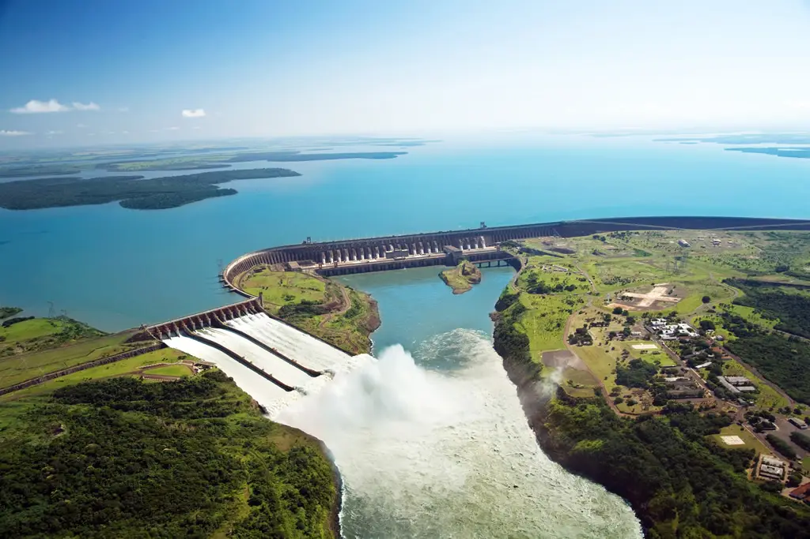
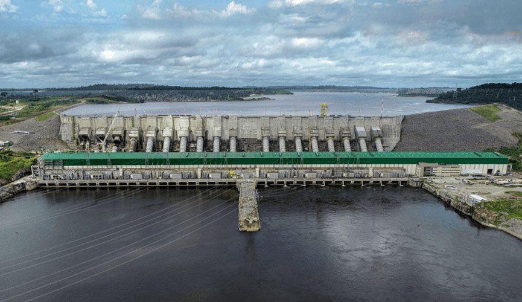
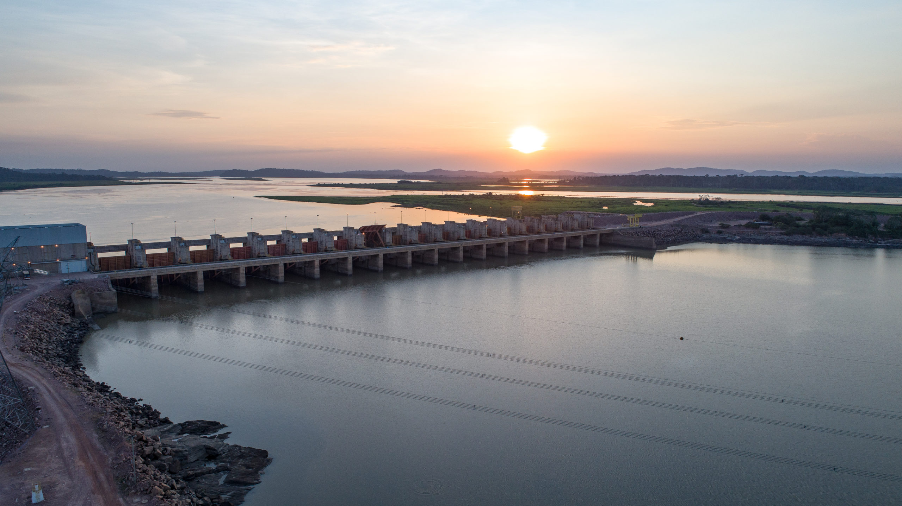
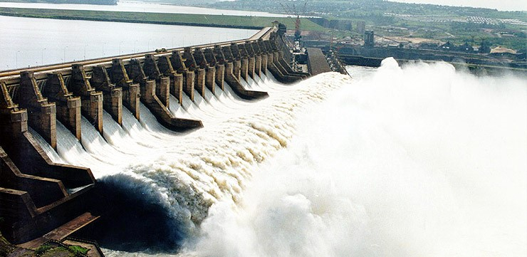

AS CINCO MAIORES REPRESAS DO BRASIL
Aqui estão as 5 maiores represas hidroelétricas no Brasil, organizada em ordem decrescente:
ITAIPU
A usina hidroeletrica de Itaipu Binacional fica em 1° lugar, produzindo cerca de 14.000 MW. A usina fica dividido entre Brasil e Paraguai.
BELO MONTE
A usina hidroelética de Belo Monte fica em 2° lugar, produzindo cerca de 11.233 MW.
TUCURUI
A usina de hidroelétrica de Tucuruí fica em 3°, produzindo cerca de 8.370 MW.
SÃO LUIZ DO TAPAJÓS
A usina hidroelétrica de São Luíz do Tapajós fica em 4° lugar, produzindo cerca de 6.356,4 MW
SANTO ANTONIO

A usina hidroelétrica de Santo antonio fica em 5° lugar no ranking, das hidreletricas, produzindo cerca de 3.568,3 MW.